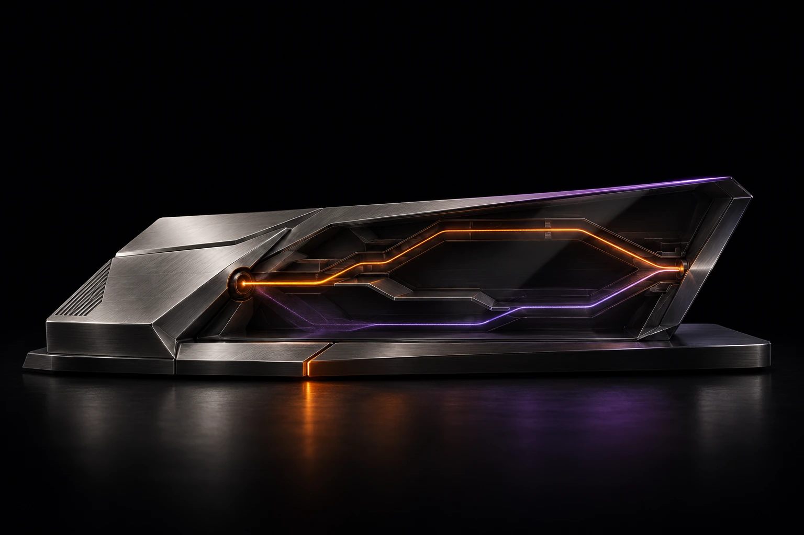

Engenharia de rotas para jogos
Rotas em análise.
Uma decisão.
O Smooth está em desenvolvimento para comparar o caminho entre seu PC e o servidor do jogo e explicar quando vale a pena trocar de rota.

Da conexão à decisão.
Quando a partida sofre com picos de latência ou perda de pacotes, o Smooth avalia se outro caminho até o servidor melhora a conexão.
O que está previsto para o PC.
O plano prevê um cliente Windows homologado, perfil exibido antes da confirmação, indicação da rota por sessão e suporte no escopo da futura oferta. Ao encerrar ou reverter a sessão, novas conexões deverão voltar à rota da operadora.
Consultar o método- Plataforma inicial
- Windows 11 x64. Jogos, builds e regiões dependem da homologação.
- Medição local
- Ethernet ajuda a reduzir a variação introduzida pela rede doméstica.
- Limite de atuação
- A seleção de rota atua na rede. FPS e atraso dos periféricos exigem diagnóstico próprio.